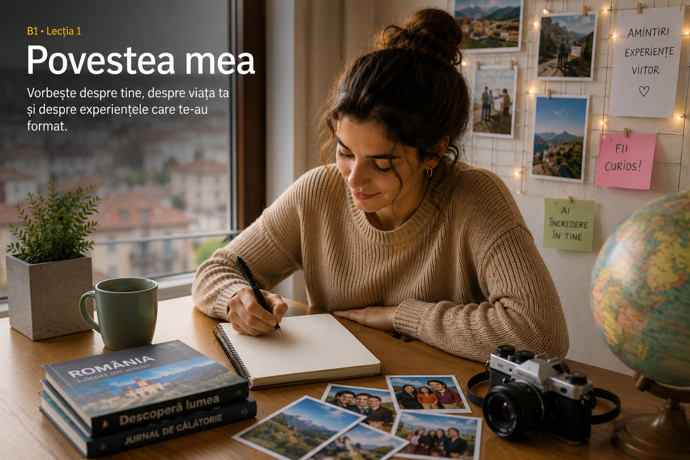

01.Povestea mea

La sfârșitul lecției vei ști
Vocabular tematic
I. Comprehensiune de lectură
model B1A. Citește textul
Povestea Irinei
M-am născut într-un oraș mic din nordul României, dar am crescut într-un sat din apropiere, unde bunicii mei aveau o casă veche cu o grădină mare. În copilărie, petreceam mult timp afară, citeam povești și îi ajutam pe bunici la treburile zilnice. Atunci nu înțelegeam cât de importante erau acele momente, dar acum îmi dau seama că ele m-au învățat să fiu răbdătoare și responsabilă.
Când am început liceul, familia mea s-a mutat la oraș. La început mi-a fost greu, pentru că nu cunoșteam pe nimeni și totul părea mai rapid. După câteva luni, mi-am făcut prieteni, am intrat într-un club de lectură și am descoperit că îmi place să scriu. Mai târziu, am ales să studiez comunicarea, deoarece voiam să învăț cum pot spune povești reale într-un mod clar și convingător.
B. Adevărat sau fals
- Irina s-a născut într-un sat din nordul României.
- În copilărie, Irina petrecea mult timp în grădina bunicilor.
- Mutarea la oraș a fost ușoară de la început.
- Clubul de lectură a ajutat-o să descopere interesul pentru scris.
C. Ordonează informațiile
| Informație | Ordinea în text |
|---|---|
| a. Irina a ales să studieze comunicarea. | |
| b. Familia s-a mutat la oraș. | |
| c. Irina a petrecut copilăria lângă bunici. | |
| d. Irina și-a făcut prieteni noi. |
Cheie orientativă
A/F: 1-F, 2-A, 3-F, 4-A. Ordine: c, b, d, a.
D. Găsește succesiunea
- Completează propozițiile cu una dintre expresiile: mai întâi, după aceea, mai târziu, în cele din urmă.
- am început liceul.
- m-am mutat la oraș.
- am descoperit că îmi place să scriu.
- am înțeles cât de valoroase sunt amintirile.
II. Gramatică și vocabular
perfect compus vs. imperfectA. Observă diferența
B. Completează cu forma potrivită
- Când eram copil, eu (a petrece) mult timp la bunici.
- La doisprezece ani, familia mea (a se muta) într-un oraș mai mare.
- În fiecare vară, noi (a merge) la țară.
- În liceu, eu (a descoperi) pasiunea pentru scris.
- Casa bunicilor (a fi) veche, dar foarte primitoare.
C. Derivare de vocabular
| Cuvânt de bază | Completează propoziția |
|---|---|
| a alege | A fost o importantă pentru viitorul meu. |
| a educa | Familia și școala au avut un rol esențial în mea. |
| responsabil | În copilărie am învățat ce înseamnă . |
D. Alege forma corectă
- În fiecare vară, noi (merge/mergeam) la bunici.
- La început, mi-a fost greu pentru că nu (cunoașteam/am cunoscut) pe nimeni.
- După liceu, am știut că (vreau/voiam) să scriu despre oameni.
- Casa bunicilor (era/a fost) plină de povești.
E. Scrie propoziții
Redactează două propoziții scurte în care folosești: 1) un verb la perfect compus și 2) un verb la imperfect.
Cheie orientativă
B: petreceam, cunoașteam, voiam, era. C: alegere, educația, responsabilitatea.
III. Exprimare scrisă
100-150 cuvinteA. Text personal
Scrie un text de aproximativ 120 de cuvinte cu titlul „Povestea mea”. Menționează unde te-ai născut, unde ai crescut, o experiență importantă, o schimbare din viața ta și un obiectiv pentru viitor.
B. E-mail către un prieten
Un prieten român te întreabă cum a fost copilăria ta. Răspunde printr-un e-mail în care povestești două amintiri și explici de ce sunt importante pentru tine.
C. Planul textului tău
Notează în câteva propoziții: 1) unde te-ai născut, 2) o experiență care te-a schimbat, 3) o schimbare importantă din viața ta și 4) un obiectiv pentru viitor. Folosește legături logice între idei.
IV. Ascultare
simulare- Mihai s-a născut într-o familie .
- În weekend mergea des la .
- La liceu a devenit mai .
- Lecția importantă primită de la familie a fost să nu ușor.
V. Exprimare orală
model examen B1A. Conversație dirijată
Răspunde la întrebări: Unde te-ai născut? Cum era locul în care ai crescut? Cine te-a influențat cel mai mult? Ce experiență te-a schimbat?
B. Monolog
Vorbește 2 minute despre o etapă importantă din viața ta: copilărie, școală, mutare, primul loc de muncă sau o decizie importantă.
C. Joc de rol
Studentul A este intervievator pentru un proiect despre povești de viață. Studentul B răspunde și oferă detalii despre familie, educație și planuri.